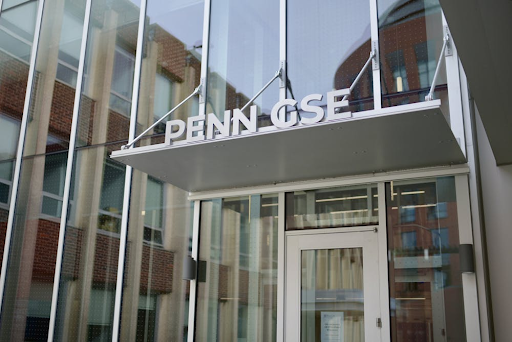
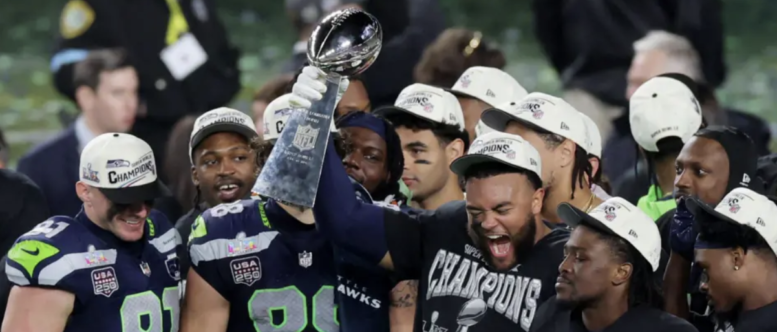
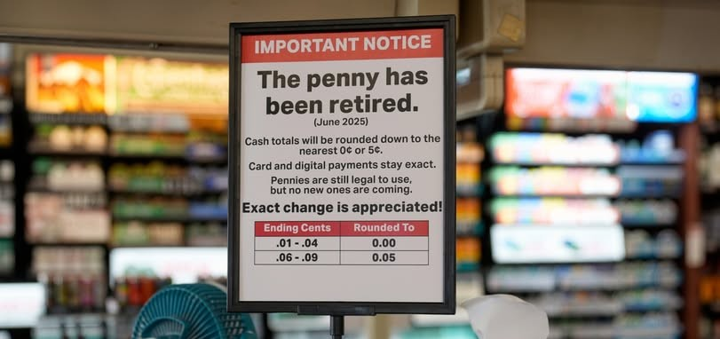

Apptronik Reaches $5B as Humanoid Race Accelerates
Apptronik, one of the industry leaders in AI humanoid robotics, has just reached a valuation of approximately $5 billion following recent funding announcements. The number…
Read on The Acronym →I report on science, technology, and campus news for The Acronym, IMSA's student newspaper. All articles link to the original publication.

Apptronik, one of the industry leaders in AI humanoid robotics, has just reached a valuation of approximately $5 billion following recent funding announcements. The number…
Read on The Acronym →
On January 28, Amazon laid off over 16,000 employees, following the 14,000 announced last October. These 30,000 layoffs reflect a broader corporate trend: reducing management…
Read on The Acronym →
In July 2025, schools and universities averaged 4,210 weekly cyberattacks. Three months later, the University of Pennsylvania (UPenn) became the latest institution to face the…
Read on The Acronym →
The Seattle Seahawks have secured their second-ever title at Super Bowl LX, defeating the Patriots 29-13 and returning to championship status for the first time…
Read on The Acronym →
On November 12th, the last penny was minted. This penny is predicted to enter circulation in 2026, marking the end of an era lasting over…
Read on The Acronym →
Although Warner Bros Discovery (WBD) shareholders voted against his $52 million pay package this June, it looks as if CEO David Zaslav may still be…
Read on The Acronym →I'm drawn to stories that intersect of science and everyday life. Research happening on campus, technology reshaping how students learn, findings from the scientific community that deserve more attention than they get. I try to write clearly enough that someone with no background in the subject walks away actually understanding it, not just feeling like they did. Good science journalism isn't about simplifying things until they break, but rather finding the right entry point so the complexity becomes interesting instead of intimidating. That's what I'm working toward with every piece I write.
The Acronym is IMSA's official student-organized newspaper. It was formed by students, for students, in 1987. When it was conceived, the Acronym was printed in the style of newspapers at the time, in other words, on actual paper! In those days, the Acronym was organized into annual volumes with issues being published on various schedules through the years.
Fun Fact: The "Acronym" is an acronym (technically, a backronym). It stands for the "Academy's Choice Reading: One Newspaper for You and Me."
Reach out about research, engineering, or stories I should cover.